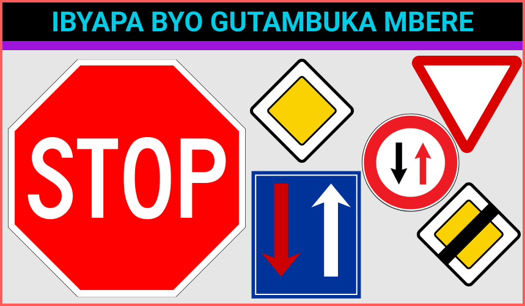
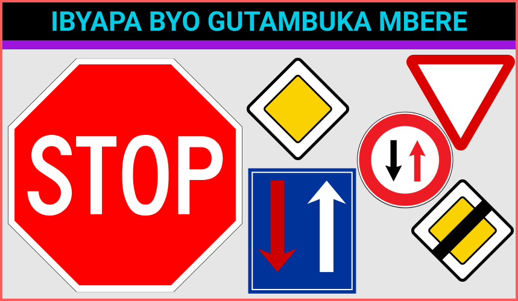

Ibibazo n'ibisubizo byateguwe hifashishijwe ibibazo byabajijwe mu bihe
bitandukanye mu Rwanda n’ahandi. Bikaba bigamije gufasha abifuza kubona
uruhushya rw'agateganyo kwitegura neza.
Uko Witegura Ikizamini
- Menya amategeko y'umuhanda mu Rwanda (Code de la route).
- Menya ibimenyetso byose by'umuhanda n'ubusobanuro bwabyo.
- Shyira mu mutwe amabwiriza agenga gutwara ibinyabiziga.
- Gerageza gukora imyitozo y'ikizamini kenshi gashoboka.
Amabwiriza Yihariye
- Kwitonda no gusoma neza buri kibazo mbere yo kugisubiza.
- Kwirinda guhubuka, kuko amanota agenerwa ku bisubizo byuzuye.
- Kwiga buri cyiciro cy’ibimenyetso n’ibyapa bitandukanye.
- Gukoresha amasomo yemewe n’inzego za Traffic mu Rwanda.
Uko Wakwiyandikisha
-
Jya ku rubuga
IremboGov
cyangwa ukoreshe USSD *909#.
- Hitamo "Kwiyandikisha mu Ikizamini cyo Gutwara Ibinyabiziga".
- Andika nimero y'indangamuntu yawe.
- Hitamo uburyo bwo gukora ikizamini (mudasobwa cyangwa impapuro).
- Kwishyura amafaranga y'ikizamini ku rubuga Irembo.
Niba witeguye, Kanda buto iri munsi utangire gukora Ikizamini;
.png)
.png)

.png)
.png) 

.png)
.png)
.png)
.png)
.png)
.png)
.png)
.png)
.png)
.png)
.png)
.png)